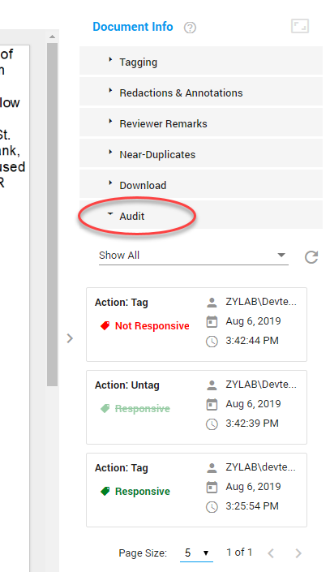
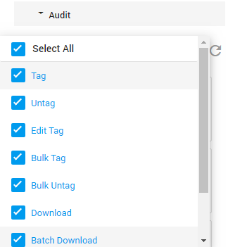
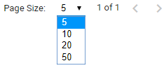

View Audit actions performed on a document in Document View (only when you have a role with the proper audit permission assigned to you).
In Document View, navigate to the right-hand side of the screen, and select Audit.

Each time an action is performed on the document shown, it is listed here (including User name, Date executed, Time executed).
Filter on specific actions supported in Document View.

Click Reload to refresh the list and view the latest actions.
Adjust the Page Size and/or browse through the result pages.
